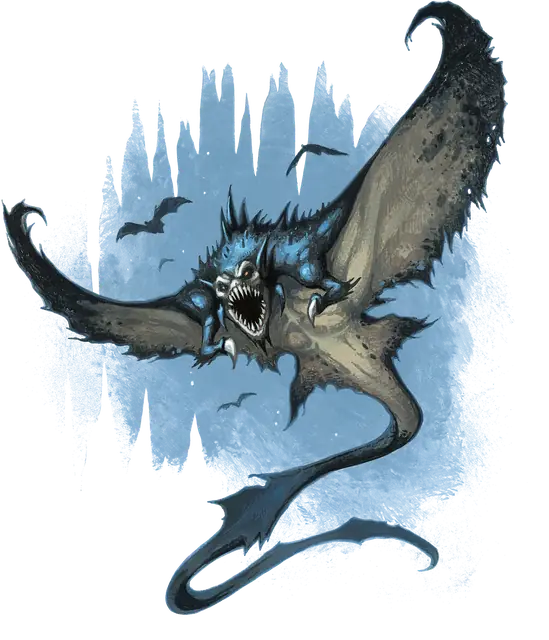

Плащевик
Cloaker
Большая Аберрация, Хаотичная Нейтральная

Класс Защиты 14 Инициатива +5 (15)
Хиты 91 (14к10 + 14)
Скорость 10 футов, Полёта 40 футов
| мод | спас | ||
|---|---|---|---|
| СИЛ | 17 | +3 | +3 |
| ЛОВ | 15 | +2 | +2 |
| ТЕЛ | 12 | +1 | +1 |
| мод | спас | ||
|---|---|---|---|
| ИНТ | 13 | +1 | +1 |
| МДР | 14 | +2 | +2 |
| ХАР | 7 | −2 | −2 |
Иммунитеты Испуганный
Чувства Тёмное зрение 120 футов, пассивное Восприятие 12
Языки Глубинная речь, Подземный
Опасность 8 (3 900 опыта; БВ +3)
Особенности
Чувствительность к свету. Находясь на Ярком свету, плащевик совершает с Помехой все проверки характеристик и броски атаки.
Действия
Мультиатака. Плащевик совершает одну атаку Прикреплением и две атаки Хвостом.
Прикрепление. Бросок рукопашной атаки: +6, досягаемость 5 фт. Попадание: 13 (3к6 + 3) Колющего урона. Если цель — существо Большого размера или меньше, плащевик прикрепляется к ней. Пока плащевик прикреплён к цели, она получает состояние Ослеплённый, а плащевик не может совершать атаки Прикреплением против других целей. Вдобавок к этому плащевик ополовинивает получаемый им урон (округляя вниз), а цель получает то же количество урона. Плащевик может открепиться, потратив 5 футов перемещения. Существо может действием совершить проверку Силы (Атлетика) Сл 14, чтобы открепить плащевика от себя или от другого существа в пределах 5 футов от себя.
Хвост. Бросок рукопашной атаки: +6, досягаемость 10 фт. Попадание: 8 (1к10 + 3) Рубящего урона.
Бонусные действия
Стон. Спасбросок Мудрости: Сл 13, каждое существо в 60-футовой Эманации, исходящей от плащевика. Провал: Цель получает состояние Испуганный до конца следующего хода плащевика. Успех: Цель получает иммунитет к Стону плащевика на следующие 24 часа.
Фантазмы (Перезарядка после Долгого или Короткого отдыха). Плащевик сотворяет заклинание Отражения, не требуя компонентов (заклинательная характеристика — Мудрость). Заклинание оканчивается преждевременно, если плащевик начинает или заканчивает свой ход, находясь на Ярком свету.
Бонус мастерства +3
Среда обитания Подземье
Сокровища Инструментальные
Плащевик
Охотник в темноте
Плащевики — таинственные хищники Подземья, названные так авантюристами за сходство с висящими плащами, когда они прижимаются к стенам. Как называют себя сами плащевики — неизвестно, да и называют ли они себя вообще хоть как-то. Хотя они несомненно разумны, поведение их часто остаётся непостижимым.
Иногда плащевики собираются в анклавах Подземья, но редко строят поселения или создают какое-либо подобие общества. Большинство действуют как одиночные хищники, затаиваясь в мрачных подземных галереях или заброшенных подземельях — порой на месяцы — в ожидании добычи. Пятнистая кожа позволяет им сливаться с окружением. Когда ничего не подозревающая жертва приближается, плащевик расправляет складки и пытается вцепиться в неё, чтобы задушить в своих мощных крыльях.
Плащевики наслаждаются страхом, который внушают врагам. Помимо засадных приёмов, они умеют создавать иллюзорных двойников и издавать потусторонние стоны, которые пугают прочих существ до дрожи — на каком-то глубинном, первобытном уровне. Порой плащевики целыми днями изводят заплутавших в Подземье исследователей, запугивая и рассеивая их, прежде чем напасть. С другими существами они заговаривают редко — разве что шёпотом, обращая жуткие загадки к тем, кого вот-вот поглотят.